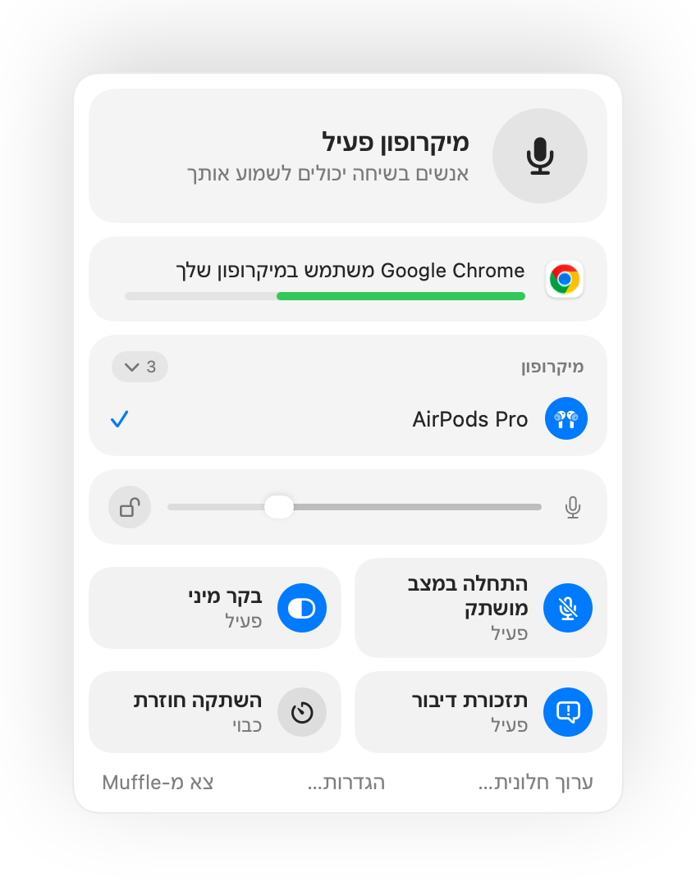
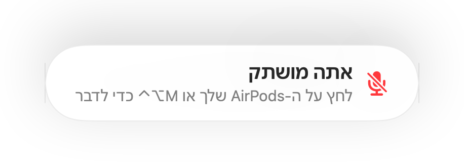
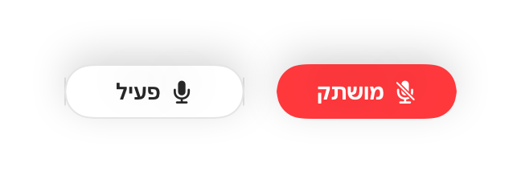
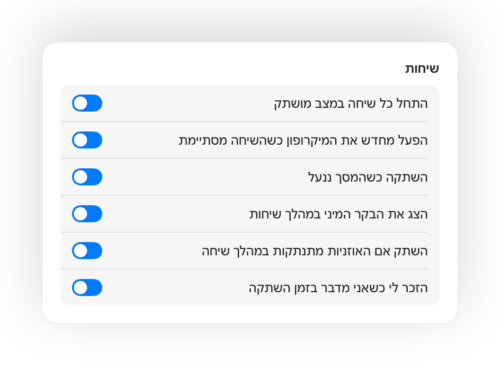
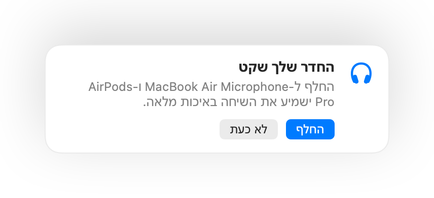

השתק את מיקרופון ה-Mac מכל מקום.
לחץ על ה-AirPods שלך או על קיצור מקלדת יחיד. Muffle מכבה את המיקרופון עצמו, כך ש-Google Meet, Zoom, Teams, Slack וכל אפליקציה אחרת שומעות שקט.
חינם ל-3 ימים. לאחר מכן תשלום חד פעמי, ללא מינוי. עבור macOS 14 Sonoma ואילך.

פועל עם כל אפליקציה שמשתמשת במיקרופון שלך
- Google Meet
- Zoom
- Microsoft Teams
- Slack
- Discord
- FaceTime
- Webex
- Skype
- SoWork
- Gather
- Chrome
- Safari
- Arc
- Edge
- Firefox
Muffle משתיק את המיקרופון ברמת החומרה, כך שזה לא משנה באיזו אפליקציה, דפדפן או כרטיסייה משתמשים בו.
כל מה שה-Mac שלך צריך לעשות בשיחה
לחץ על ה-AirPods שלך כדי להשתיק
במהלך כל שיחה, לחץ על הזרוע פעם אחת כדי להשתיק ושוב כדי לבטל השתקה. זה פועל אפילו ב-Chrome, שבו Google Meet ושיחות רשת אחרות מתעלמות מלחיצה על ה-AirPods.
קיצור דרך אחד לכל אפליקציה
Control-Option-M משתיק אותך בכל מקום, גם כשהשיחה נמצאת בכרטיסייה ברקע. החזק אותו לחוץ כדי לדבר בזמן השתקה, ושחרר כדי להשתיק שוב.
תזכורת ”אתה מושתק”
אם תתחיל לדבר בזמן השתקה, Muffle יעדכן אותך מיד, עוד לפני שתסביר רעיון שלם לאף אחד.
שיחות על טייס אוטומטי
התחל כל שיחה במצב מושתק, הפעל מחדש את המיקרופון כשהשיחה מסתיימת, והשתק בכל פעם שאתה נועל את ה-Mac.
תמיד תדע מתי אתה פעיל
לחצן צף קטן מציג את מצב המיקרופון במהלך שיחות. לחץ עליו כדי להשתיק או לבטל השתקה.
רמת המיקרופון נשארת קבועה
Chrome, Zoom ו-Teams משנים את עוצמת המיקרופון בעצמם. נעל אותה ו-Muffle יחזיר אותה למקומה.
בטוח כשהסוללה ב-AirPods נגמרת
אם האוזניות מתנתקות באמצע שיחה, Muffle משתיק את הקול לפני שהשיחה עוברת למיקרופון של ה-Mac ומשדרת את כל החדר.
קיצורי דרך ומרכז הבקרה
השתק מאפליקציית קיצורי דרך, מ-Siri, מ-Stream Deck, מ-Raycast או מלחצן במרכז הבקרה.
לחיצה כדי לדבר או לחיצה להשתקה
בחר כיצד קיצור הדרך שלך פועל: הקש כדי להחליף מצב, החזק כדי לדבר, או החזק כדי להשתיק לשיעול. הוסף מקשים נפרדים להשתקה ולביטול השתקה, או החזק מקש בודד כמו ⌥ ימני או לחצן עכבר נוסף.
השתקה שוב כשאתה משתתק
ביטלת את ההשתקה כדי להגיד משהו? אם תישאר בשקט במשך הזמן שבחרת, Muffle ישתיק אותך שוב. רק הקול שלך נחשב, לא הקלדה או רעשי רקע.
המיקרופון הטוב ביותר לחדר
עם AirPods בחדר שקט, Muffle מציע להשתמש במיקרופון של ה-Mac כדי שה-AirPods ישמיעו את השיחה באיכות מלאה. כשנהיה רועש, הוא מציע את המיקרופון של ה-AirPods.
אי אפשר לפספס
זוהר ירוק או אדום סביב המסך, סמל צבעוני בשורת התפריטים, לחצן צף וצליל שאפשר לכבות עבור כל מיקרופון. הפעל את אלה שאתה רוצה.




הגדרה תוך דקה
- התקן את Muffle מ-Mac App Store ואפשר גישה למיקרופון.
- הצטרף לשיחה בכל אפליקציה, כרגיל.
- לחץ על ה-AirPods שלך, הקש Control-Option-M או לחץ על הסמל בשורת התפריטים כדי להשתיק.
פרטיות כעיקרון יסוד
Muffle לעולם אינו מקליט, שומר או שולח שמע. הוא רק מדליק ומכבה את המיקרופון ומודד את עוצמת הקול שלו. ללא חשבונות, ללא ניתוח נתונים וללא מעקב.
שאלות נפוצות
האם Muffle עובד עם Google Meet ב-Chrome?
כן. Chrome אינו מעביר את לחיצת ההשתקה של AirPods לשיחות רשת, לכן Muffle קולט אותה ומשתיק את המיקרופון עצמו. כך גם בכל שיחה בכרטיסיית דפדפן.
האם אנשים אחרים יראו שאני מושתק?
אפליקציית השיחה עדיין עשויה להציג את המיקרופון שלך כפעיל, מכיוון ש-Muffle מכבה את המיקרופון עצמו ולא את הלחצן באפליקציה. אנשים ישמעו שקט בכל מקרה. הסמל של Muffle בשורת התפריטים הופך לאדום בזמן שאתה מושתק.
אילו דגמי AirPods נתמכים?
AirPods Pro, AirPods 3 ואילך, ו-AirPods Max, בנוסף לדגמי Beats עם פקדי שיחה. קיצור המקלדת ושורת התפריטים פועלים עם כל מיקרופון.
האם זה עובד עם Zoom, Teams, Slack ו-Discord?
כן. Muffle פועל עם כל אפליקציה ב-Mac שמשתמשת במיקרופון, הן באפליקציות שולחניות והן בשיחות דפדפן.
האם מדובר במינוי?
לא. נסה כל תכונה בחינם למשך 3 ימים, ולאחר מכן בטל את הנעילה של Muffle ברכישה חד פעמית.
מדוע Muffle זקוק לגישה למיקרופון?
macOS מעביר לחיצות AirPods רק לאפליקציות שמשתמשות במיקרופון, לכן Muffle שומר על חיבור שקט פתוח במהלך שיחות. שום דבר אינו מוקלט.
מה קורה אם אצא מ-Muffle כשאני מושתק?
Muffle מפעיל את המיקרופון מחדש בעת היציאה, כך שלעולם לא תישאר מושתק ללא כוונה.
באילו גרסאות macOS יש תמיכה?
macOS 14 Sonoma ואילך. הלחצן במרכז הבקרה דורש את macOS 26 ואילך.
האם ל-Muffle יש לחיצה כדי לדבר?
כן. בחר ״לחיצה כדי לדבר״ בהגדרות והחזק את קיצור הדרך כדי לדבר. תוכל גם להחזיק מקש בודד כמו ⌥ ימני או fn, או לחצן עכבר נוסף.
מדוע ה-AirPods שלי נשמעים פחות טוב במהלך שיחות?
כששיחה משתמשת במיקרופון של ה-AirPods, ה-AirPods עוברים למצב שיחה שמשמיע שמע באיכות נמוכה יותר. בחדר שקט Muffle מציע להשתמש במקום זאת במיקרופון של ה-Mac, כך שה-AirPods ימשיכו לפעול באיכות מלאה.
האם רעשי רקע ישאירו את המיקרופון שלי פעיל?
לא. Muffle מזהה דיבור באמצעות ניתוח שמע במכשיר מבית Apple, כך שרק דיבור נחשב. הקלדה, לחיצות ורעשי רקע לא נחשבים, ושום דבר לא מוקלט.
מדריכים
- איך להשתיק את Google Meet עם AirPods ב-Macלחיצה על AirPods לא משתיקה את Google Meet ב-Chrome ב-Mac. כך תוכל להשתיק שיחת וידאו ב-Meet עם אוזניות AirPods, קיצור דרך או שורת התפריטים.
- איך להשתיק את Zoom עם AirPods או קיצור דרך ב-Macהשתקת Zoom ב-Mac בלחיצה על AirPods או קיצור דרך גלובלי, גם כש-Zoom אינו החלון הפעיל. עובד באפליקציית Zoom ובדפדפן.
- איך להשתיק את Microsoft Teams עם AirPods ב-Macהשתקת Microsoft Teams ב-Mac בעזרת AirPods, קיצור דרך גלובלי או שורת התפריטים. עובד באפליקציית Teams ובדפדפן.
- איך להשתיק שיחת Huddle ב-Slack מכל אפליקציה ב-Macהשתקת שיחת Huddle ב-Slack ב-Mac מכל אפליקציה בעזרת קיצור דרך או אוזניות AirPods. בלי לחפש את החלון של השיחה.
- השתקה ו-Push to talk ב-Discord ב-Mac עם קיצור דרך גלובליהשתמש בקיצור דרך גלובלי להשתקה ודיבור ב-Discord ב-Mac, או השתק בלחיצה על AirPods. פועל באפליקציית Discord ובדפדפן.
- איך להשתיק את Webex מכל אפליקציה ב-Macהשתק פגישות Webex ב-Mac עם קיצור דרך גלובלי או עם ה-AirPods שלך, גם כשחלון Webex אינו פעיל.
די לחפש את לחצן ההשתקה.
Muffle זמין להתנסות בחינם למשך 3 ימים.
בקרוב ב-Mac App Store